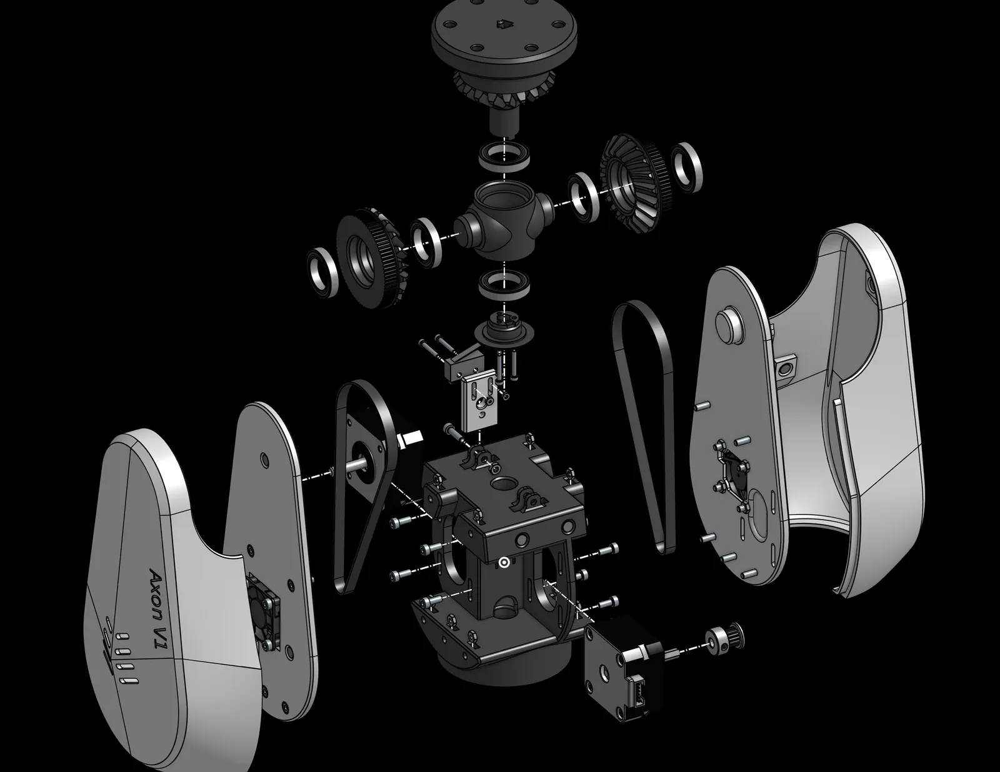
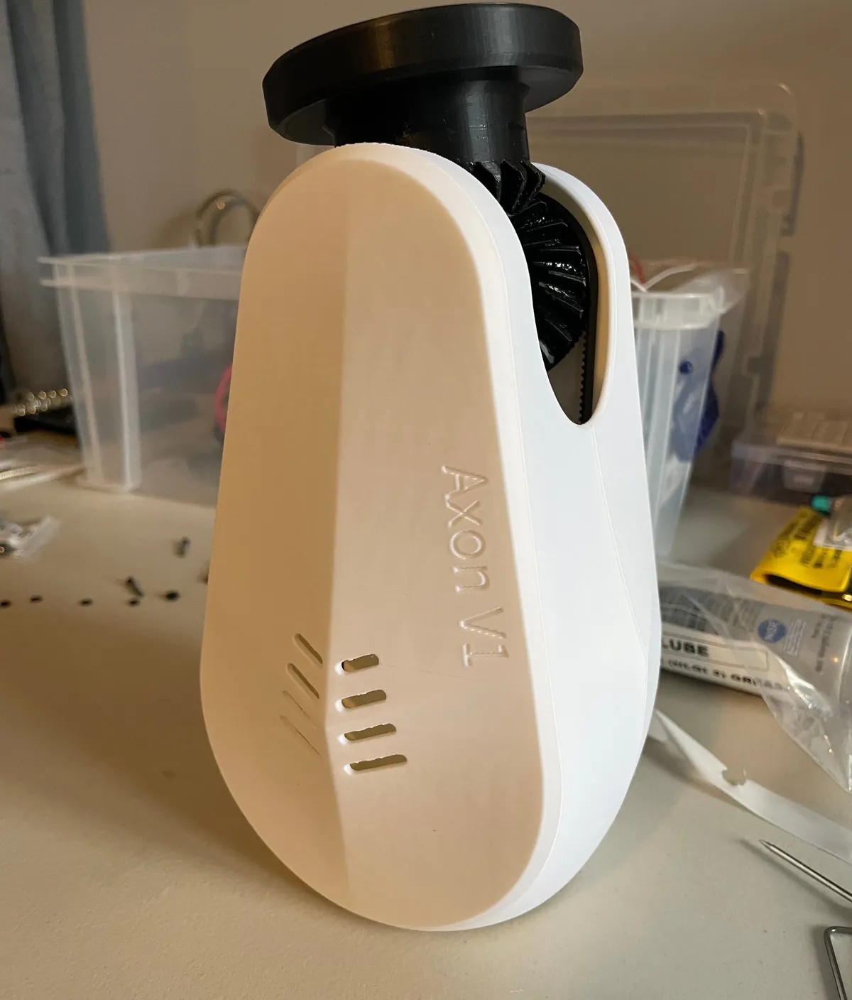
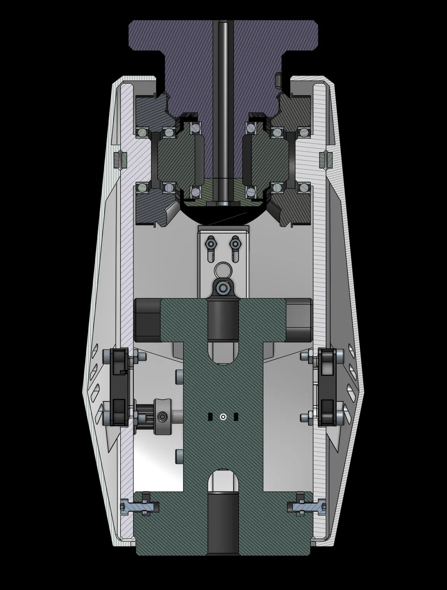
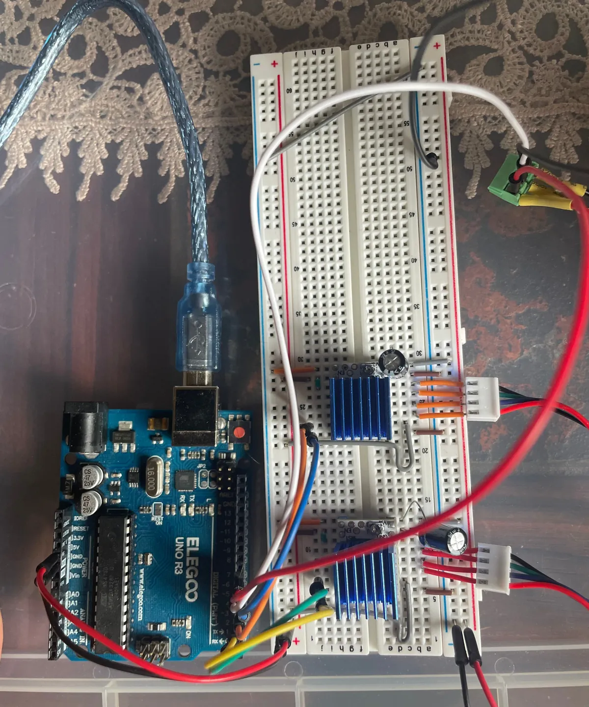
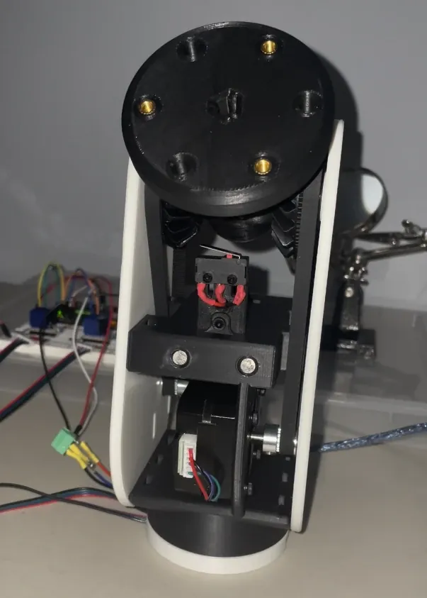
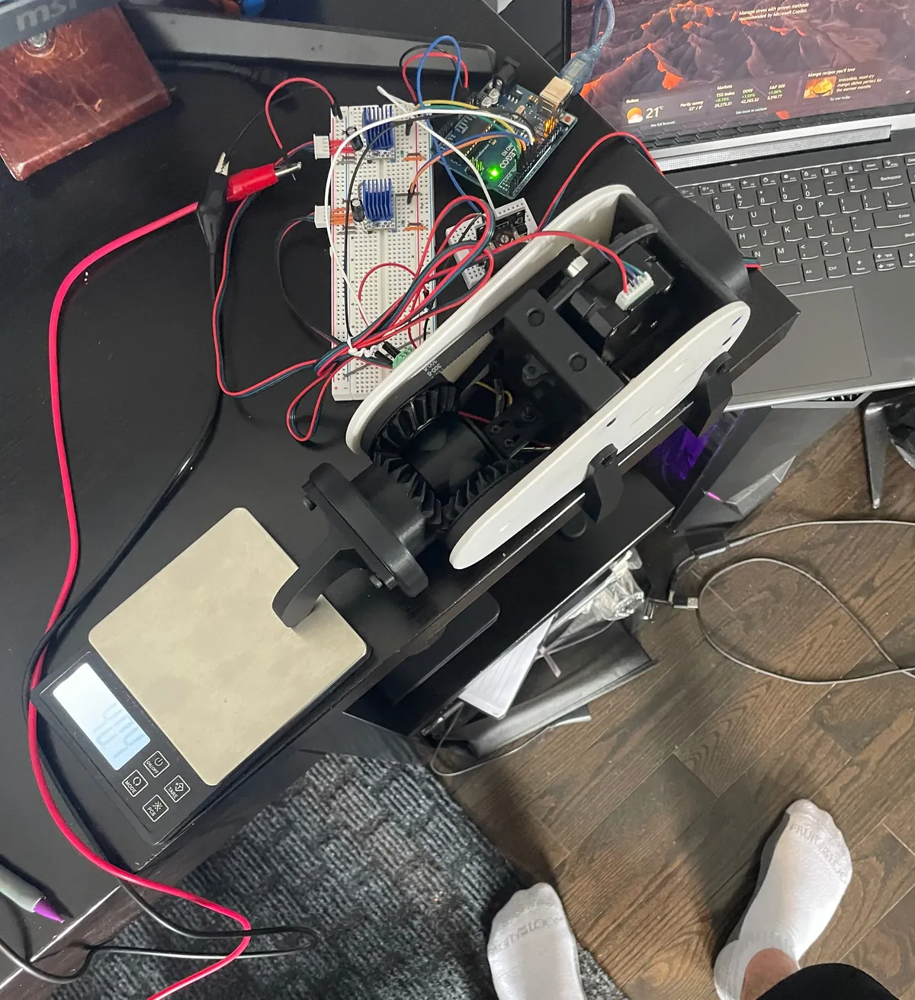

Personal project
Axon V1 differential wrist
The two-axis wrist I built before the full arm, to learn differentials, stepper control and synchronized motion.
- My role
- Solo design and build
- Tools
- Onshape, Arduino, AccelStepper, TMC2208
- 1.3 Nm
- output torque
- ~0
- backlash
- < $50
- in parts
- 25 pages
- design report


What it is
A two-axis robotic wrist, built as the first piece of a 6-DOF arm. Two steppers drive a 3D-printed differential through timing belts, which also multiply the torque. An Arduino Uno running AccelStepper keeps both axes in sync using a synchronization routine I wrote, and you can drive it with an analog joystick or send serial commands for tuning.




How I built it
- Set constraints and criteria first, then sketched and researched the overall layout.
- Modelled it in Onshape for 3D printing, with off-the-shelf hardware where it made sense.
- Ran it open loop on TMC2208 drivers, with both steppers homing off a single limit switch.
- Stress tested it on a rig I designed to find its limits, and wrote it all up in a 25-page report.






What I learned
It met every constraint I set, with about 1.3 Nm of output torque, smooth coordinated motion and close to zero backlash, for under $50. It also gave me a list for the next version, with closed-loop control, contactless homing and better wire routing at the top. Most of that went into Axon V2.